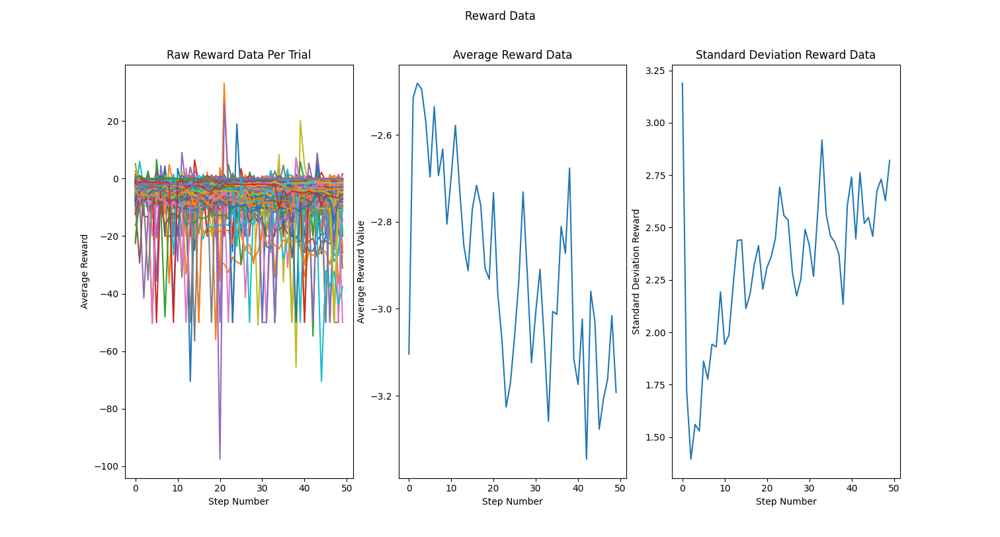

Hexapod Self-Leveling with Q-Learning
Skills: Python, Reinforcement Learning, Q-Learning, Sensor Fusion, Hexapod Robotics
Project Overview
This project, completed for CS/ME 301, applied Q-learning for dynamic self-leveling of a HiWonder hexapod robot on an inclined surface. The robot used IMU data to evaluate its inclination and learned effective leg adjustments through trial-and-error, guided by a custom reward function. All learning ran on real hardware, demonstrating the practical challenges and successes of reinforcement learning in physical robotics.
Reinforcement Learning Framework
- Task: Learn a policy to autonomously level the hexapod chassis on a sloped platform by controlling its six femur motors.
- State Space: 3D IMU (accelerometer) readings [ax, ay, az] discretized into 7 buckets per axis (bucketed for tractability), yielding 343 possible states.
- Action Space: For each epoch, robot could increase, decrease, or hold each femur motor—18 cumulative actions possible (6 motors × 3 actions).
- Goal State: IMU values close to 0.0 in the x and y directions, and close to 1.0 in the z direction — indicating that the robot is level.
-
Reward Function:
- Negative squared error distance from goal, encouraging states closer to horizontal.
- Positive step reward for moving closer to goal state.
- Large positive reward on reaching the level state (within small tolerance of goal orientation).
- Penalty for joint limit violations to avoid self-collisions.
- Algorithm: Tabular Q-learning with epsilon-greedy exploration for balancing learning new actions and exploiting known good actions.
Left: Hexapod leg DOFs used for leveling. Right: RL Markov Decision Process flow.
Training Process
- IMU values read after every leg movement, mapped to discrete state bucket.
- At each step, a random or greedy action was chosen, robot moved, new state observed, and Q-table updated via:
- Robot trained on real inclined surface (5°–15°). Each epoch: 50 steps per episode, reset/reposition between epochs for broader table coverage.
Results & Analysis
- 195 epochs (up to 50 moves each); 28 reached the target level state (~14% success).
- Accelerometer readings and rewards, and motor positions all recorded for analysis after learning.


Reward trends (raw/average/std) over time show that the system became less level as the epoch continued, and the increase in SD shows that the robot was not able to learn and reduce its variance enough
Timestamps of epochs where the goal state was reached show that the rate of sucessful epochs accelerated (large gap is from night away from lab)
Servo position histogram reveals that there was little to no bias learned for the position of the motors
Limitations & Reflections
- Limited training time along with huge state space led to a sparse Q-table; more data is needed for robust self-leveling.
- Reward design impacted learning quality; negative global error reward may have countered incremental learning. We should have considered removing negative reinforcement.
- Using a nearly continuous state forced us to discritize it, thus losing the precision of the sensor. A type of RL that does not require this sort of discritization may be better suited for this task.
- This project showed that training a RL algorithm on hardware is extremely difficult, and likely more successful if at least part of the training is conducted in simulation.